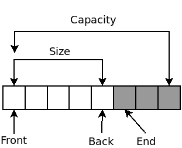

A template defines a family of classes or functions. Template code is incomplete C++ code that describes a general function or class that is intelligible regardless of the particular types or constant values that the function or class may use.
Here is a class template for a triplet:
template <class T1, class T2, class T3>
struct triplet {
T1 first;
T2 second;
T3 third;
};
triplet<int, bool, double> t(5, true, 6.8);
It is similar to std::pair which is an existing standard class template for storing a pair of objects. This one stores 3 objects of any 3 types. T1, T2, and T3 are the template parameters for triplet. In the definition of a class template, any name that refers to any of these template parameters will be substituted for the template argument that was supplied during class template instantiation.
triplet<int, bool, double> completely defines a new type by causing class template instantiation for triplet with int, bool and double supplied as template arguments. This results in the following code generated:
int first;
bool second;
double third;
std::vector is probably the most used class template in C++, defining your own container requires knowledge of templates and dynamic memory management.
A vector or dynamic array uses allocation and deallocation functions to grow and shrink the number of elements. It is generally understood that a vector stores a dynamically allocated array internally and as more elements are inserted into the vector, the vector will, from time to time, have to allocate a new internal array of a bigger capacity and move all the existing elements into the new storage and then deallocate the old storage.
Vectors keep track of at least 3 things: the address of the internal array, the size , and the capacity. The size of a vector is the number of elements that are in use within the vector. The capacity of the vector is the total number of elements allocated in that vector's internal array, some of which may not be in use. At any time, the size of a vector should always be less than or equal to the capacity of that vector.
Here is a diagram of the dynamic storage array that is managed internally by a vector:

The white squares represent the initialized elements and the gray squares represent the uninitialized elements. Only the initialized elements make up the size of the vector while capacity of the vector is made up of both the initialized and uninitialized elements.
The following is an implementation of a simplified version of std::vector.
#ifndef SIMPLE_VECTOR_H
#define SIMPLE_VECTOR_H
#include <memory>
#include <algorithm>
template <class T>
class simple_vector {
public:
/* Constructor */
simple_vector() : base(0), uptr(0), ebase(0)
{
}
/* Copy-constructor */
simple_vector(const simple_vector& other) : base(0), uptr(0), ebase(0)
{
reallocate_and_assign(other.size(), other.base, other.uptr);
}
/* Destructor */
~simple_vector()
{
if (base != 0) {
clear();
::operator delete[](base);
}
}
/* Copy-assignment operator (not optimized) */
simple_vector& operator=(simple_vector other)
{
swap(other);
return *this;
}
/* Access an element from it's index */
T& operator[](std::size_t index)
{
return base[index];
}
const T& operator[](std::size_t index) const
{
return base[index];
}
/* Returns a reference to the first element */
T& front()
{
return *base;
}
const T& front() const
{
return *base;
}
/* Returns a reference to the last element */
T& back()
{
T* temp = uptr;
--temp;
return *temp;
}
const T& back() const
{
T* temp = uptr;
--temp;
return *temp;
}
/* Returns true if this vector has no elements */
bool empty() const
{
return base == uptr;
}
/* Returns the number of elements */
std::size_t size() const
{
return uptr - base;
}
/*
* Returns the number of elements this vector can store before the
* next reallocation
*/
std::size_t capacity() const
{
return ebase - base;
}
/* Erases all elements */
void clear()
{
while (uptr != base) (--uptr)->T::~T();
}
/* Inserts an element to the end */
void push_back(const T& value)
{
if (uptr == ebase) {
reallocate_and_assign(
capacity() != 0 ? capacity() * 2 : 2,
base, uptr);
}
::new((void*)uptr) T(value);
++uptr;
}
/* Erases the last element */
void pop_back()
{
(--uptr)->T::~T();
}
/* Exchanges the contents of this vector with another */
void swap(simple_vector& other)
{
using std::swap;
swap(base, other.base);
swap(uptr, other.uptr);
swap(ebase, other.ebase);
}
private:
/* Pointer to the dynamic storage array */
T* base;
/* Pointer to the unused elements */
T* uptr;
/* Pointer to the end of the dynamic storage array */
T* ebase;
/*
* Reallocates this vector to a new capacity and assigns the values
* from the range [first, last)
*/
template <class InputIt>
void reallocate_and_assign(std::size_t new_capacity, InputIt first,
InputIt last)
{
simple_vector temp;
temp.base = (T*)::operator new[](new_capacity * sizeof(T));
temp.uptr = std::uninitialized_copy(first, last, temp.base);
temp.ebase = temp.base + new_capacity;
swap(temp);
}
};
template <class T>
void swap(simple_vector<T>& a, simple_vector<T>& b)
{
a.swap(b);
}
#endif
This does not support all the features that std::vector supports, but it demonstrates the most important ones (push_back, pop_back, copy-assign) so that you can learn the basic idea of how a dynamic array works.
Contrast this implementation with one where new-expressions are used for allocation and the assignment operator is used to create and move elements; certain member functions of simple_vector could have been defined as:
~simple_vector()
{
if (base != 0) ::delete[] base;
}
/* ... */
void clear()
{
uptr = base;
}
void push_back(const T& value)
{
if (uptr == ebase) {
reallocate_and_assign(
capacity() != 0 ? capacity() * 2 : 2,
base, uptr);
}
*uptr = value;
++uptr;
}
void pop_back()
{
--uptr;
}
/* ... */
template <class InputIt>
void reallocate_and_assign(std::size_t new_cap, InputIt first,
InputIt last)
{
simple_vector temp;
temp.base = ::new T[new_cap];
temp.uptr = std::copy(first, last, temp.base);
temp.ebase = temp.base + new_cap;
swap(temp);
}
This is the more conventional way to introduce how a vector might work, and it is still functional but it drifts significantly far from being efficient since new-expressions initialize unused elements too early and operations like pop_back do not actually destroy elements.
This less efficient change to simple_vector only affects elements that have constructors and destructors; for integral or floating-point element types, there is no difference in execution since: default-initialization of these types is a no-operation, direct-initialization of these types is the same as copy-assignment, and the destruction of these types is a no-operation.